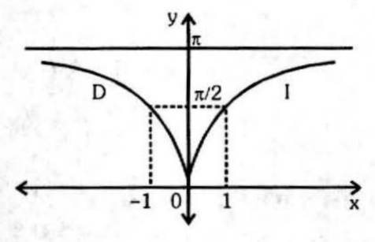
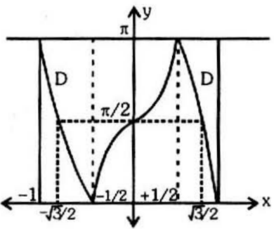
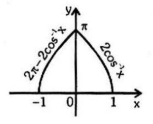
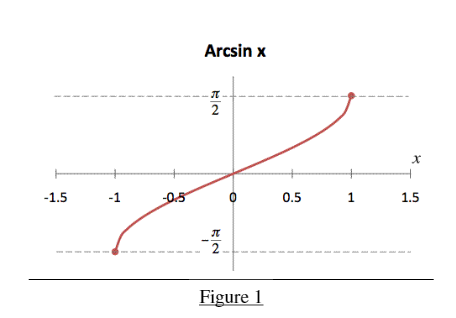
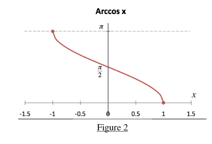
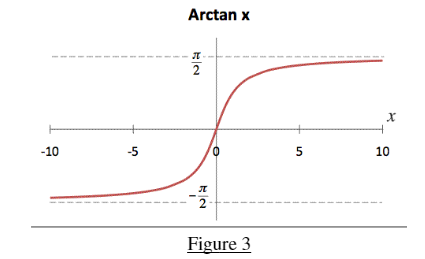
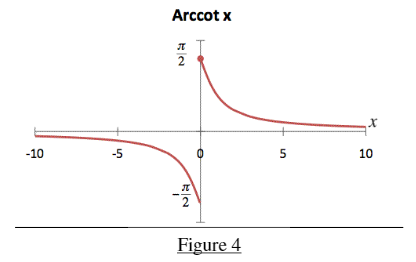

\[ sin^{-1}(-x) = -sin^{-1}(x)\]
\[ cos^{-1}(-x) = π-cos^{-1}(x)\]
\[ tan^{-1}(-x) = -tan^{-1}(x)\]
\[ cot^{-1}(-x) = π-cot^{-1}(x)\]
\[ sec^{-1}(-x) = π-sec^{-1}(x)\]
\[ cosec^{-1}(-x) = -cosec^{-1}(x)\]
\[sin^{-1}x + cos^{-1}x = π/2 \space,\space x ∈ [-1, 1] \]
\[tan^{-1}x + cot^{-1}x = π/2 , x ∈ R\]
\[cosec^{-1}x + sec^{-1}x = π/2 \]
\[sin^{-1}\frac{1}{x} = cosec^{-1}x \]
\[cos^{-1}\frac{1}{x} = sec^{-1}x \]
\[tan^{-1}\frac{1}{x} = cot^{-1}x, x > 0\]
\[sin(sin^{-1}x) = x, -1≤ x ≤1\]
\[cos(cos^{-1}x) = x, -1≤ x ≤1\]
\[tan(tan^{-1}x) = x, – ∞ < x < ∞ \]
\[cot(cot^{-1}x) = x, – ∞ < x < ∞ \]
\[sec(sec^{-1}x) = x, - ∞ < x ≤ 1\space or\space 1 ≤ x < ∞\]
\[cosec(cosec^{-1}x) = x, - ∞ < x ≤ 1\space or\space 1 ≤ x < ∞\]
\[sin^{-1}x+sin^{-1}y = sin^{-1}(x\sqrt{1-y^2} + y\sqrt{1-x^2})\]
\[sin^{-1}x-sin^{-1}y = sin^{-1}(x\sqrt{1-y^2} - y\sqrt{1-x^2})\]
\[cos^{-1}x+cos{-1}y = cos^{-1}(xy-\sqrt{(1-x^2)(1-y^2)}\]
\[cos^{-1}x-cos{-1}y = cos^{-1}(xy+\sqrt{(1-x^2)(1-y^2)}\]
\[tan^{-1}x+tan^{-1}y = tan^{-1}\frac{x+y}{1-xy}\]
\[tan^{-1}x-tan^{-1}y = tan^{-1}\frac{x-y}{1+xy}\]
| \[Equation\] | \[Conditions\] | \[Graph\] |
|---|---|---|
| \[y=sin^{-1}(\frac{2x}{1+x^2})\] | \[\space \space \space \space \space \space \space \space 2tan^{-1}x \space \space \space \space \space \space \space \space \space \space if \space \space \space \space \space \space |x| \leqslant 1\] \[ \pi \space - \space 2tan^{-1}x \space \space \space \space \space \space \space \space \space \space if \space \space \space \space \space \space x>1\]\[-(\pi + 2tan^{-1}x) \space \space \space \space \space \space \space \space \space if \space \space \space \space \space \space \space x <-1\] |
|
| \[y=cos^{-1}(\frac{1-x^2}{1+x^2})\] | \[2tan^{-1}x \space \space \space \space \space \space \space \space \space if \space \space \space \space \space x \geqslant 0\] \[ -2tan^{-1}x \space \space \space \space \space \space if \space \space \space \space \space x <0\] |  |
| \[y=tan^{-1}(\frac{2x}{1-x^2})\] | \[\space \space \space \space \space \space \space \space 2tan^{-1}x \space \space \space \space \space \space \space \space \space \space \space \space if \space \space \space \space \space \space |x| <1\] \[ \pi \space + \space 2tan^{-1}x \space \space \space \space \space \space \space \space \space if \space \space \space \space \space \space x<-1\]\[-(\pi - 2tan^{-1}x) \space \space \space \space \space \space \space \space if \space \space \space \space \space \space x>1\] | |
| \[y=sin^{-1}(3x-4x^3)\] | \[-(\pi+3sin^{-1}x) \space \space \space \space \space \space if \space \space \space \space \space \space -1 \leqslant x \leqslant -\frac{1}{2}\]\[\space \space \space \space \space \space \space \space \space \space \space 3sin^{-1}x \space \space \space \space \space \space \space if \space \space \space \space \space \space \space \space - \frac{1}{2} \leqslant x \leqslant \frac{1}{2}\]\[\pi - 3sin^{-1}x \space \space \space \space \space \space if \space \space \space \space \space \space \space \space \space \frac{1}{2} \leqslant x \leqslant 1\] | |
| \[y=cos^{-1}(4x^3-3x)\] | \[3cos^{-1}x-2\pi \space \space \space \space \space \space if \space \space \space \space \space \space -1 \leqslant x \leqslant -\frac{1}{2}\]\[2\pi - 3cos^{-1}x \space \space \space \space \space \space if \space \space \space \space \space \space -\frac{1}{2} \leqslant x \leqslant \frac{1}{2}\]\[\space \space \space \space \space \space \space \space \space \space \space 3cos^{-1}x \space \space \space \space \space \space \space if \space \space \space \space \space \space \space \space \frac{1}{2} \leqslant x \leqslant 1\] |  |
| \[y=sin^{-1}(2x \sqrt{1-x^2})\] | \[-(\pi+2sin^{-1}x) \space \space \space \space \space \space if \space \space \space \space \space \space -1 \leqslant x\leqslant -\frac{1}{2}\]\[\space \space \space \space \space \space \space \space \space \space \space 2sin^{-1}x \space \space \space \space \space \space \space if \space \space \space \space \space \space \space \space -\frac{1}{\sqrt{2}} \leqslant x \leqslant \frac{1}{\sqrt{2}}\]\[\pi - 2sin^{-1}x \space \space \space \space \space \space if \space \space \space \space \space \space \frac{1}{\sqrt{2}} \leqslant x \leqslant 1\] | |
| \[y=cos^{-1}(2x^2-1)\] | \[\space \space \space \space 2cos^{-1}x \space \space \space \space \space \space if \space \space \space \space \space \space \space \space \space 0 \leqslant x \leqslant 1\]\[2\pi-2cos^{-1}x \space \space \space \space \space \space if \space \space \space \space\space -1 \leqslant x \leqslant 0\] |  |
| \[Function\] | \[Domain\] |
\[Range \,of\, an\]
\[ Inverse\, Function\] |
\[Graphs\] |
|---|---|---|---|
|
\[sin^{-1}x\] \[(arcsine\,x)\] |
\[-1≤ x ≤1\] | \[-\frac{π}{2}≤y≤ \frac{π}{2}\] |  |
|
\[cos^{-1}x\] \[(arccosine\,x)\] |
\[-1≤ x ≤1\] | \[0≤y ≤π\] |  |
|
\[tan^{-1}x\] \[(arctangent\,x)\] |
\[– ∞ < x < ∞\] | \[-\frac{π}{2}<y<\frac{π}{2}\] |  |
|
\[cot^{-1}x\] \[(arccotangent\,x)\] |
\[– ∞ < x < ∞\] | \[0<y<π\] |  |
|
\[sec^{-1}x\] \[(arcsecant\,x)\] |
\[– ∞ ≤ x ≤-1 \]
\[or\] \[ 1≤x≤ ∞\] |
\[0≤y≤\pi,\] \[y \neq \frac{\pi}{2}\]
|
 |
|
\[cosec^{-1}x\] \[(arccosecant\,x)\] |
\[– ∞ ≤ x ≤-1\, or\, 1≤x≤ ∞\] | \[-\frac{π}{2}≤y≤\frac{π}{2},y \neq 0\] |  |